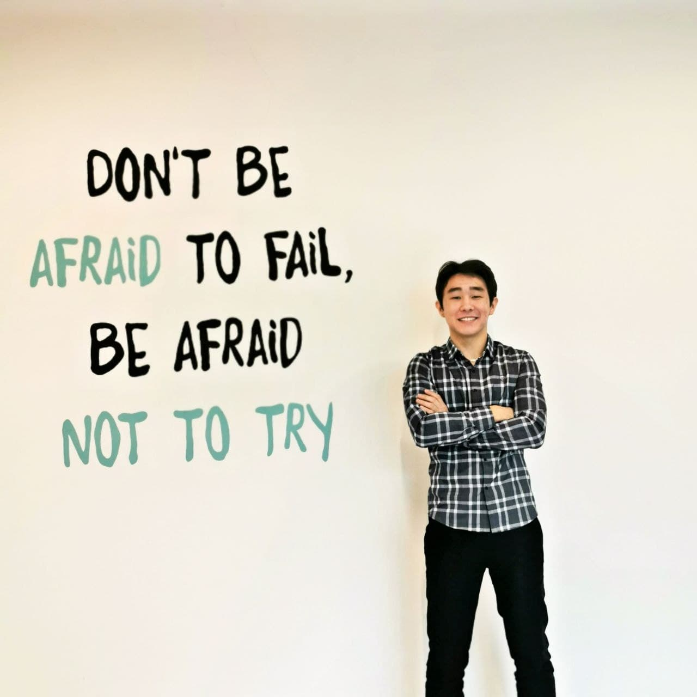

Full name: Abdrakhmanov Alikhan
Birth day: 03.02.2003
Home Town: Uralsk
education: high school, Astana IT'23 "It Management"

I was born in the countryside and finished school there. Since childhood I was used to both physical and mental work. I took up boxing for three years. I was an activist in the school and in the village club. I like to read books, listen to music, dance, do sports. In grade 11, I thought about going to school, I prepared hard and got 114 points at the UNT. I entered on a grant, I try to master all disciplines and become a competent specialist in my field as much as possible. Goal - constant growth.